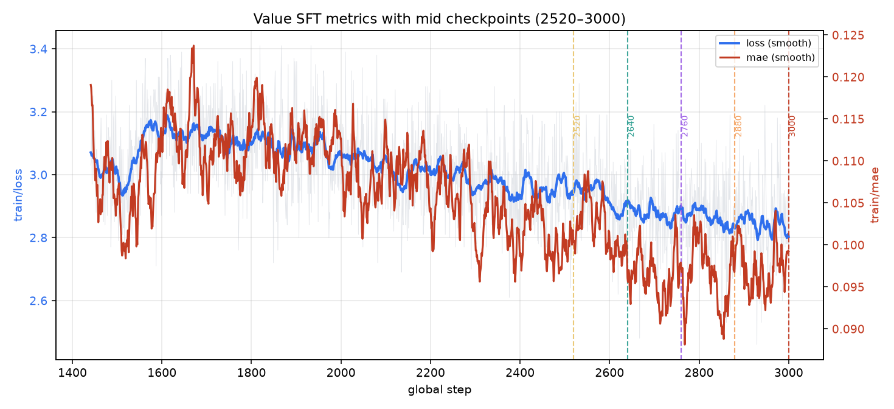
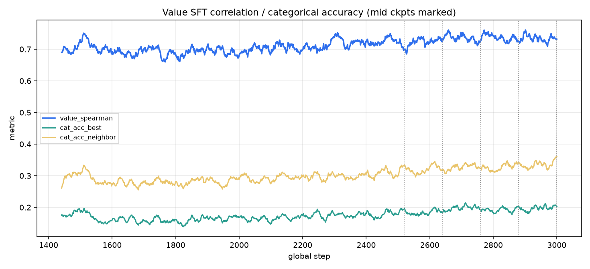
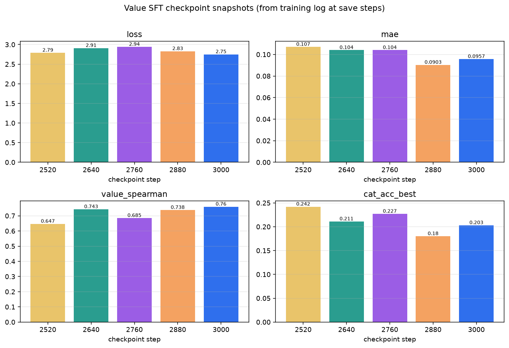
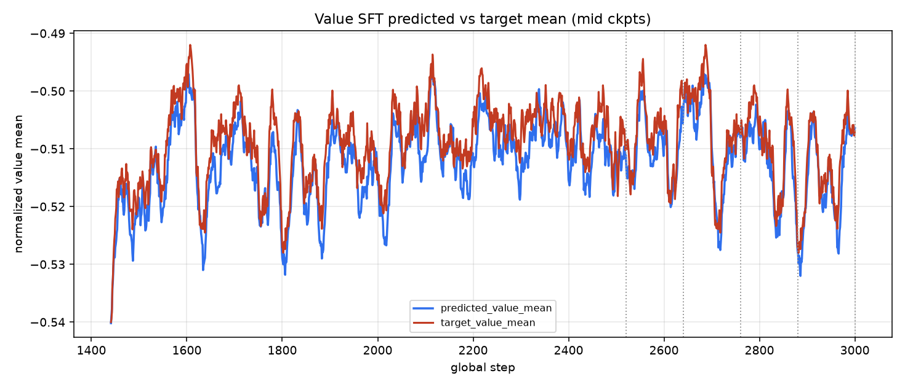

来自训练日志在存盘步的指标；验证集关闭，未做仿真 rollout。删除中间权重前的存档。
| ckpt | loss | mae | spearman | cat_acc_best | pred_mean | tgt_mean | |---:|---:|---:|---:|---:|---:|---:| | 2520 | 2.79 | 0.107 | 0.647 | 0.242 | -0.556 | -0.586 | | 2640 | 2.91 | 0.104 | 0.743 | 0.211 | -0.521 | -0.546 | | 2760 | 2.94 | 0.104 | 0.685 | 0.227 | -0.537 | -0.535 | | 2880 | 2.83 | 0.0903 | 0.738 | 0.18 | -0.55 | -0.52 | | 3000 | 2.75 | 0.0957 | 0.76 | 0.203 | -0.503 | -0.507 |


